Websites
Says what you do in the first line. Proves it in the second. Gets the phone ringing by the third.
See websites →Web design & business tools · Cardiff, Birmingham & UK-wide
Not another cookie-cutter site knocked up in a day.
“You made my business idea come to life. Better than I imagined.” — Umm AbdulHakeem
The short version
Says what you do in the first line. Proves it in the second. Gets the phone ringing by the third.
See websites →Shopify or WooCommerce, built to sell. On a budget? Ember, my ready-made shop theme, from £59.
See Ember →Rotas, bookings, dashboards. If a spreadsheet and a group chat are running your week, I build what replaces them.
See tools →Built and live · the work
Scroll and my dragon flies you through the lot — four worlds, 11 quests. Every stop opens a window on the real site, top to bottom. Scroll inside it.
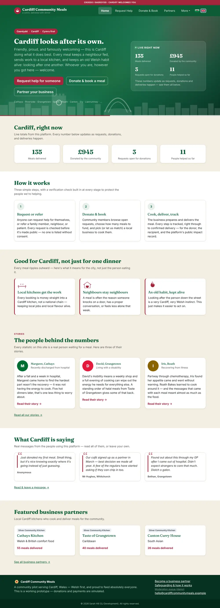
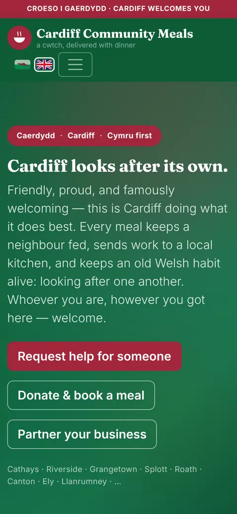
Quest 01/11 Charity & community
The quest Neighbours fund a meal, a local kitchen cooks it, and someone having a hard time gets fed — without being made to feel like a charity case.
Bilingual from the first line, Cymraeg first and English one tap away, because it’s Cardiff’s. Plain HTML, CSS and JavaScript on Bootstrap 5 with no build step, so it opens on any phone and any volunteer can look after it. Every message on the community wall is checked by a human before it goes up — safeguarding by design.
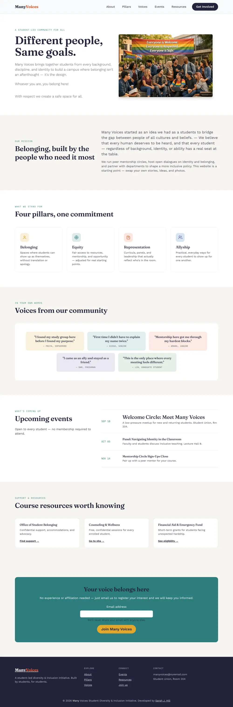
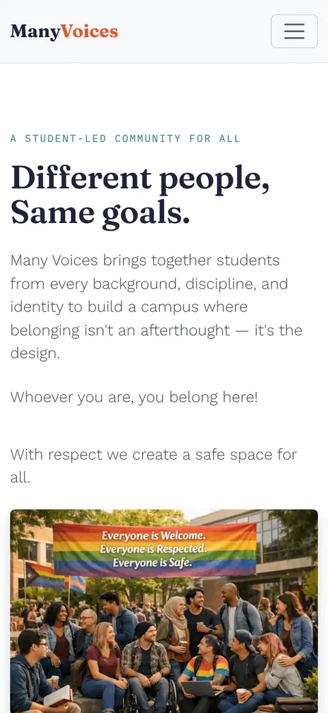
Quest 02/11 Charity & community
The quest A diversity and inclusion club run by students, for students — so belonging is the design, not an afterthought.
Fraunces for warmth, Work Sans for easy reading, IBM Plex Mono for dates and labels. The palette deliberately dodges both ‘corporate blue’ and the stock rainbow. Bootstrap 5 so it holds up on every screen a student owns.
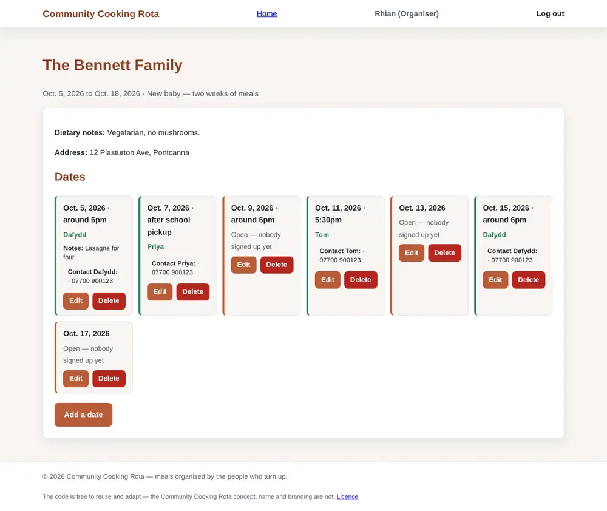
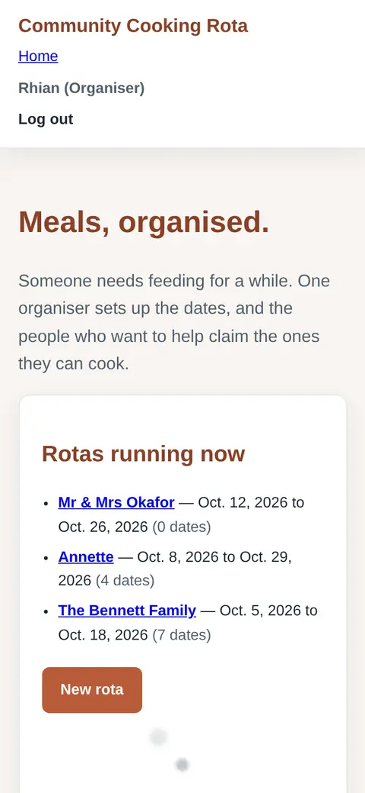
Quest 03/11 Code Institute capstone
The quest Someone needs feeding for a while — a new baby, an operation, a loss. One organiser sets the dates, and the people who want to help claim the ones they can cook.
Django, because it’s a real permissions problem: organisers own their rotas, cooks can only claim and cancel, and phone numbers only show between the two people involved in a claim. PostgreSQL on Heroku, hand-written CSS Grid with no framework, and 35 automated tests guarding the rules.
Quest 04/11 In the forge · currently building
The quest A safe, confidential and non-judgemental place to talk, for a peer-led mental health community in Cardiff.
React, Vite and TypeScript for a fast static build, with Decap CMS added so the charity’s own team can sign in and edit every page themselves — no developer on call, no monthly platform fee.
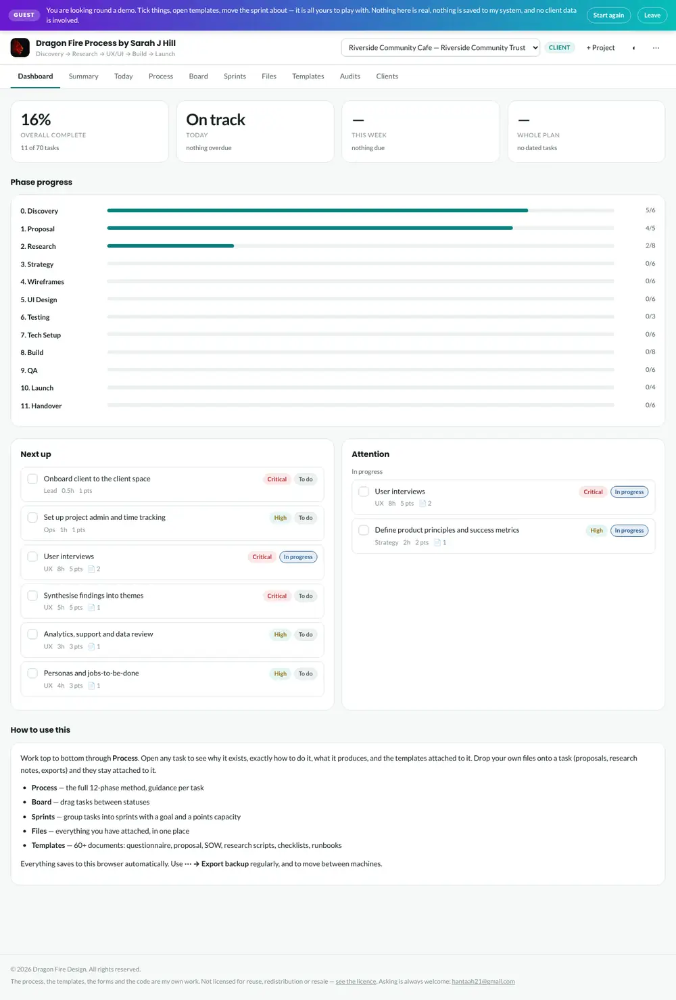
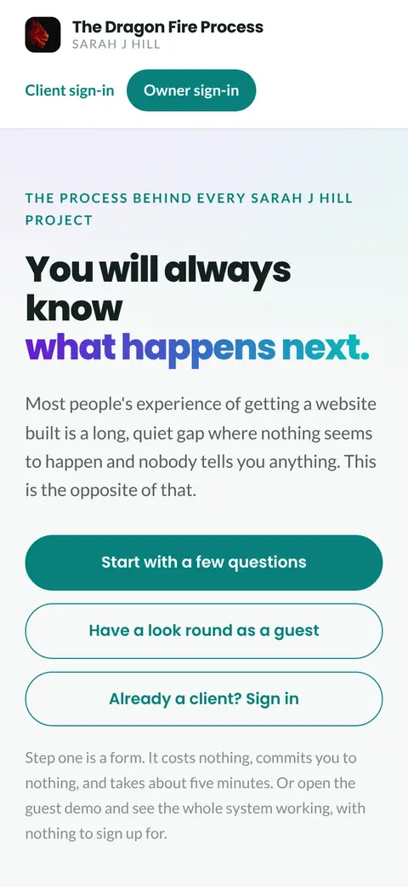
Quest 05/11 Tools & project management
The quest Nobody should have to type “any update?” Twelve phases, 69 guided tasks, simple forms, one place to upload your logo, photos and words — and a live page every client can sign in to.
I’m a studio of one, so nobody else notices what I skip — this does. Plain HTML, CSS and JavaScript with no server to babysit: it saves in the browser by default, with Supabase sign-in and Formspree client forms when they’re wanted. Light and dark themes run on design tokens.
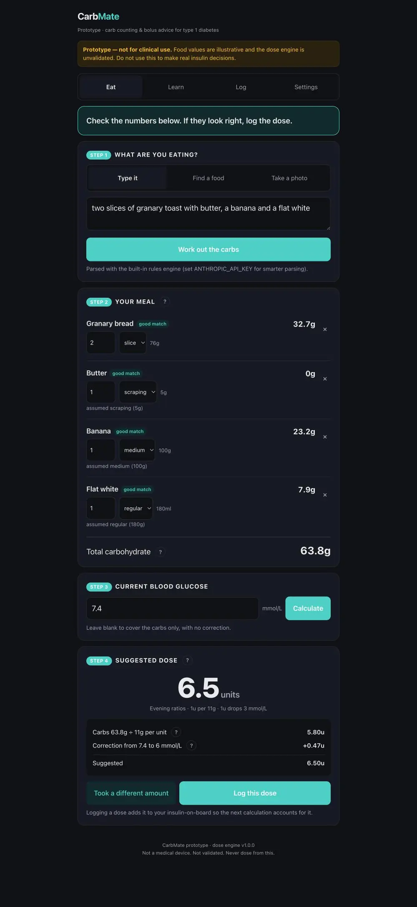
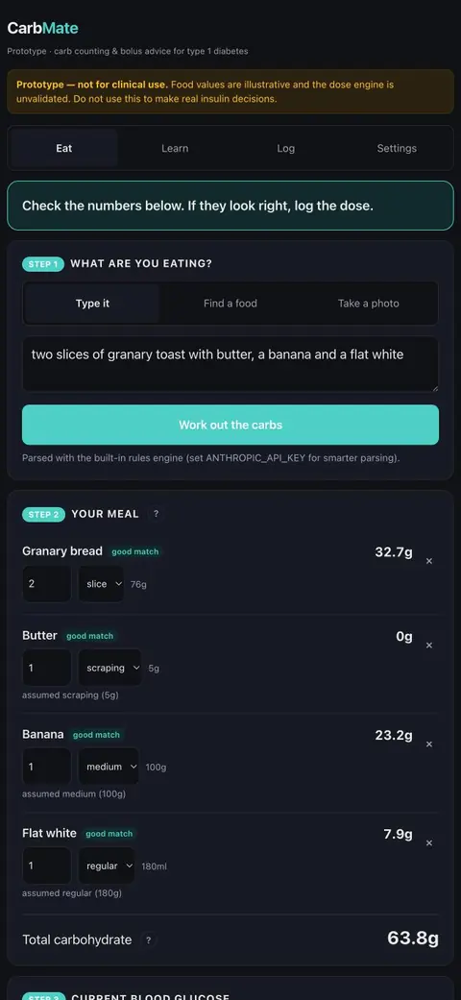
Quest 06/11 Tools · personal project
The quest A carb-counting and insulin bolus calculator, built because I’m a type 1 diabetic who found every existing app either too fiddly or paywalled. Type your meal in plain English, check the carbs it finds, add your blood glucose — and see the suggested dose with every step of the maths shown.
A Python FastAPI back end with a rules engine that reads ordinary sentences (“two slices of toast and a banana”) and turns them into weighed portions. Safety first: every assumption is shown, every number can be changed, and it says loudly that it’s a prototype — not a validated medical device.
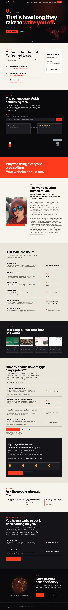
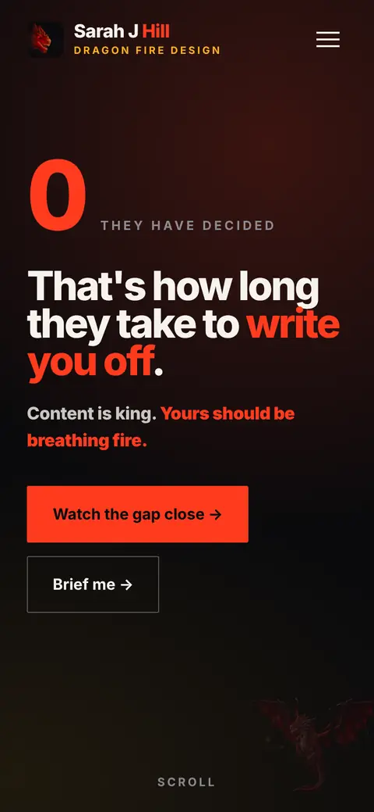
Quest 07/11 My studio · this site
The quest Websites for tradeswomen and women in business who keep getting pre-judged — proof first, so nobody writes them off in three seconds.
Hand-written HTML, CSS and JavaScript — no framework, no build step, nothing to rot — and Lighthouse 100 across the board. The dragon is a real 3D model in Three.js, breathing a hand-tuned canvas particle flame.
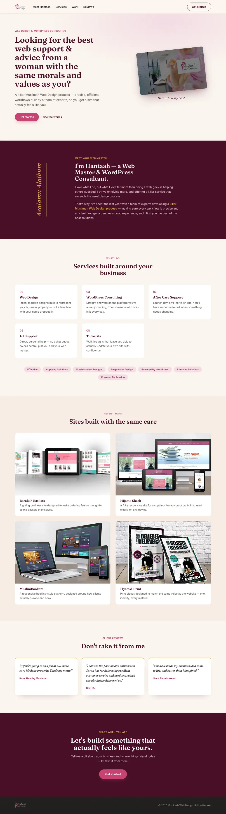
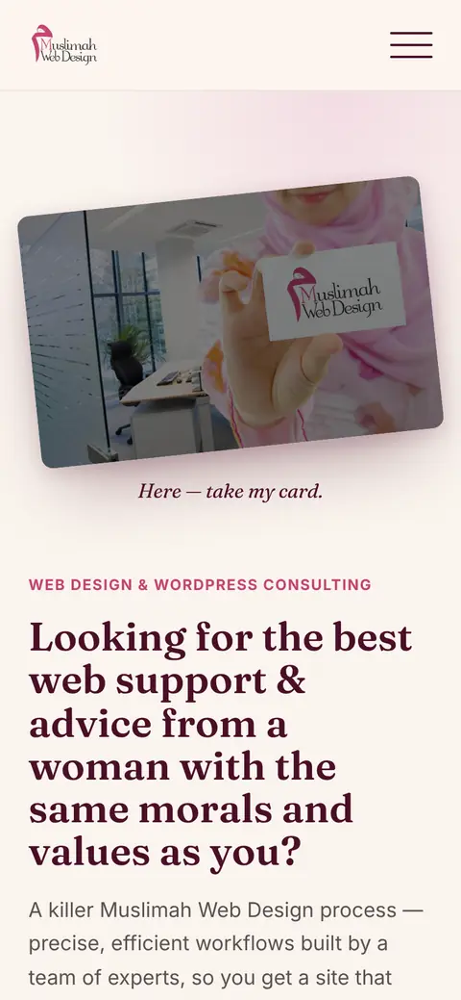
Quest 08/11 Business site
The quest Web design and WordPress consulting for Muslim women, by a Muslim woman — halal guidance and the best result for the budget in hand.
Real client work and reviews up front, because trust is the sale. Fraunces for warmth and Inter for clarity, on light hand-built pages that stay quick on any phone.
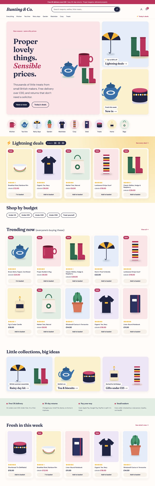
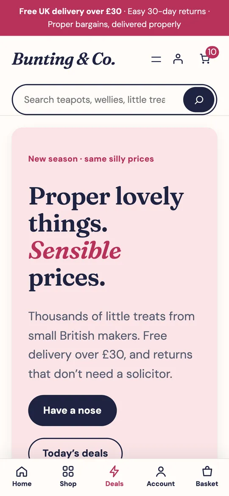
Quest 09/11 In the forge · ecommerce theme
The quest A marketplace theme for Shopify and WooCommerce — all the buzz of a marketplace, none of the tat.
Phone-first, with an app-style bottom bar, category bubbles, lightning deals and shop-by-budget. Built twice — as a Shopify Online Store 2.0 theme and a WordPress block theme — so shop owners edit every word visually, no code.
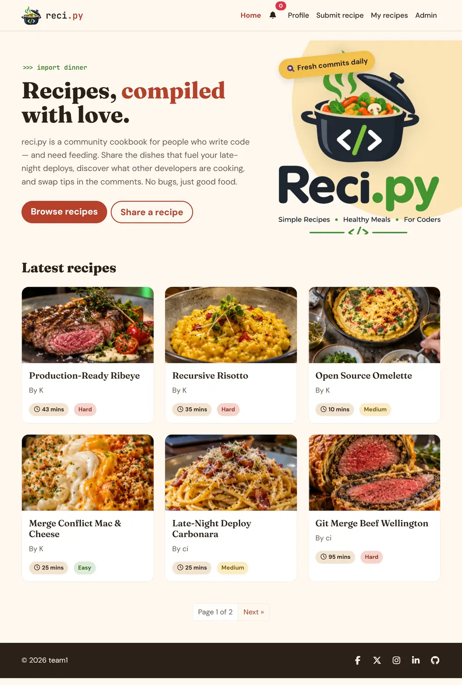
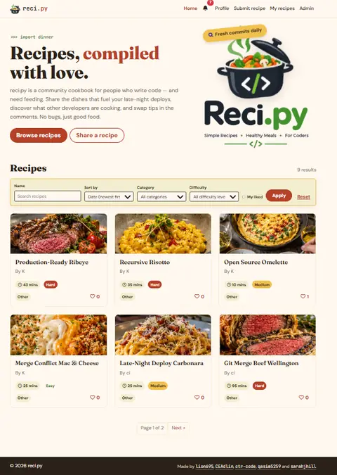
Quest 10/11 Code Institute hackathon · team of 5
The quest A community cookbook for people who write code — and need feeding. Simple recipes, healthy meals, for coders.
Django with allauth sign-in, a moderation queue so every recipe is reviewed before it’s published, comments and a notification inbox. Built as a team with Kieron, Corrine, Charles and Qasim — my part was the paginated ‘browse recipes’ home page.
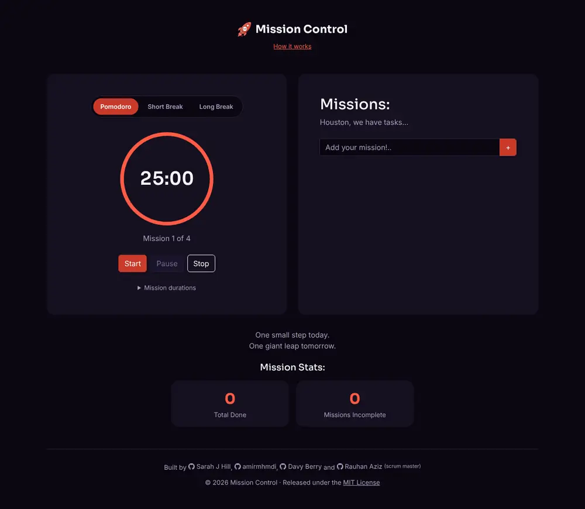
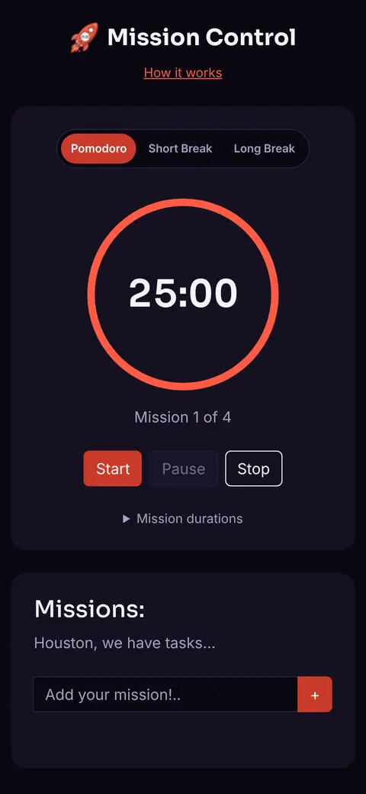
Quest 11/11 Bootcamp hackathon · team of 4
The quest A Pomodoro focus timer with a mission list, so the clock and the to-do list finally live on one screen.
Tomato red on near-black — a nod to ‘Pomodoro’ — with every colour pair checked against WCAG. Vanilla JavaScript, keyboard and screen-reader friendly, and your missions survive a refresh. Built with Rauhan, Amir and Davy.
Next quest yours
That’s the map so far. The next world on it could be yours — tell me what you’re building and I’ll tell you, straight, what it takes.
In their words
“You made my business idea come to life. Better than I imagined.”
Umm AbdulHakeem“The passion and enthusiasm Sarah has — she absolutely delivered on it.”
Bev IBJ“If you're going to do a job at all, make sure it's done properly.”
Kate Healthy MuslimahPrices
£300
The pretty postcard
A template whipped up in a day. Looks a little pretty. Does nothing for you.
Every price is a fixed quote, agreed before anything starts. No monthly rent. You own it.
FAQs
How it works · the Dragon Fire Process

Who’s building it
A Cardiff full-stack developer who builds for the people the tech industry forgets.
Front end, back end, words and project management — one person who understands the whole build, so nothing gets lost in a hand-off. I don’t do jargon and I don’t do quiet: if your idea won’t work, I’ll say so on the first call.
Doing it yourself?
My ready-made ecommerce theme for Shopify or WordPress + WooCommerce. Install it in two minutes, make it yours with no code. From £59, once.
Wherever you are, it lands in Cardiff
Say hello
Tell me what you do and what’s driving you mad about it. An honest answer within two working days — even if it’s “you don’t need me, here’s why”.